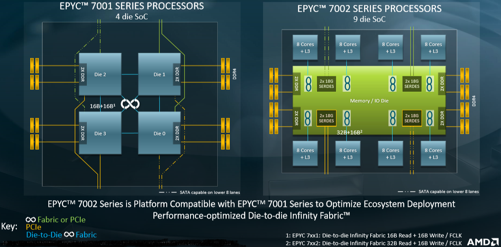
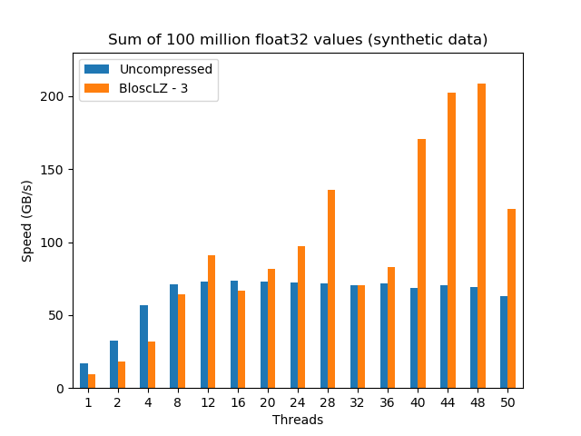
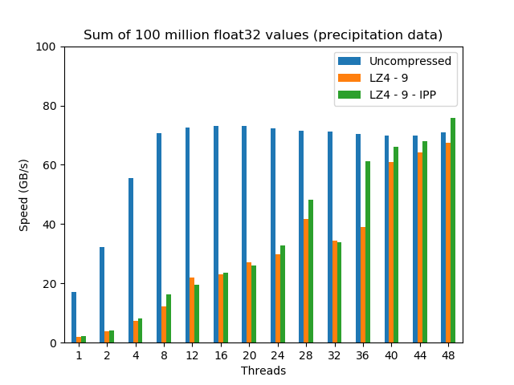

Blosc2-Meets-Rome
On August 7, 2019, AMD released a new generation of its series of EPYC processors, the EPYC 7002, also known as Rome, which are based on the new Zen 2 micro-architecture. Zen 2 is a significant departure from the physical design paradigm of AMD's previous Zen architectures, mainly in that the I/O components of the CPU are laid out on a separate die, different from computing dies; this is quite different from Naples (aka EPYC 7001), its antecessor in the EPYC series:
Such a separation of dies for I/O and computing has quite large consequences in terms of scalability when accessing memory, which is critical for Blosc operation, and here we want to check how Blosc and AMD Rome couple behaves. As there is no replacement for experimentation, we are going to use the same benchmark that was introduced in our previous Breaking Down Memory Walls. This essentially boils down to compute an aggregation with a simple loop like:
#pragma omp parallel for reduction (+:sum) for (i = 0; i < N; i++) { sum += udata[i]; }
As described in the original blog post, the different udata arrays are just chunks of the original dataset that are decompressed just in time for performing the partial aggregation operation; the final result is indeed the sum of all the partial aggregations. Also we have seen that the time to execute the aggregation is going to depend quite a lot on the kind of data that is decompressed: carefully chosen synthetic data can be decompressed much more quickly than real data. But syntehtic data is nevertheless interesting as it allows for a roof analysis of where the performance can grow up to.
In this blog, we are going to see how the AMD EPYC 7402 (Rome), a 24-core processor performs on both synthetic and real data.
Aggregating the Synthetic Dataset on AMD EPYC 7402 24-Core
The synthetic data chosen for this benchmark allows to be compressed/decompressed very easily with applying the shuffle filter before the actual compression codec. Interestingly, and as good example of how filters can benefit the compression process, if we would not apply the shuffle filter first, synthetic data was going to take much more time to compress/decompress (test it by yourself if you don't believe this).
After some experiments, and as usual for synthetic datasets, the codec inside Blosc2 that has shown the best speed while keeping a decent compression ratio (54.6x), has been BloscLZ with compression level 3. Here are the results:
As we can see, the uncompressed dataset scales pretty well until 8 threads, where it hits the memory wall for this machine (around 74 GB/s). On its hand, even if data compressed with Blosc2 (in combination with BloscLZ codec) shows less performance initially, it scales quite smoothly up to 12 threads, where it reaches a higher performance than its uncompressed counterpart (and reaching the 90 GB/s mark).
After that, the compressed dataset can perform aggregations at speeds that are typically faster than uncompressed ones, reaching important peaks at some magical number of threads (up to 210 GB/s at 48 threads). Why these peaks exist at all is probably related with the architecture of the AMD Rome processor, but provided that we are using a 24-core CPU there is little wonder that numbers like 12, 24 (28 is an exception here) and 48 are reaching the highest figures.
Aggregating the Precipitation Dataset on AMD EPYC 7402 24-Core
Now it is time to check the performance of the aggregation with the 100 million values dataset coming from a precipitation dataset from Central Europe. Computing the aggregation of this data is representative of a catchment average of precipitation over a drainage area. This time, the best codec inside Blosc2 was determined to be LZ4 with compression level 9:
As expected, the uncompressed aggregation scales pretty much the same than for the synthetic dataset (in the end, the Arithmetic and Logical Unit in the CPU is completely agnostic on what kind of data it operates with). But on its hand, the compressed dataset scales more slowly, but more steadily towards hitting a maximum at 48 threads, where it reaches almost the same speed than the uncompressed dataset, which is quite a feat, provided the high memory bandwidth of this machine (~74 GB/s).
Also, as Blosc2 recently gained support for the accelerated LZ4 codec inside Intel IPP, figures for it have been added to the plot above. There one can see that Intel's accelerated LZ4 can get an up to 10% boost in speed compared with regular LZ4; this additional 10% actually allows Blosc2/LZ4 to be clearly faster than the uncompressed dataset at 48 threads.
Final Thoughts
AMD EPYC Rome represents a significant leap forward in adding a high number of cores to CPUs in a way that scales really well, allowing to put more computational resources to our problems at hand. Here we have shown how nicely a 24-core AMD Rome CPU performs when performing tasks with in-memory compressed datasets; first, by allowing competitive speed when using compression with real data and second, allowing speeds of more than 200 GB/s (with synthetic datasets).
Finally, the 24-core CPU that we have exercised here is just for whetting your appetite, as CPUs of 32 or even 64 cores are going to happen more and more often in the next future. Although I should have better said in present times, as AMD announced today the availability of 32-core CPUs for the workstation market, with 64-core ones coming next year. Definitely, compression is going to play an increasingly important role in getting the most out of these beasts.
Appendix: Software used
For reference, here it is the software that has been used for this blog entry:
OS: Ubuntu 19.10
Compiler: Clang 8.0.0
C-Blosc2: 2.0.0b5.dev (2019-09-13)
Acknowledgments
Thanks to packet.com for kindly providing the hardware for the purposes of this benchmark. Packet guys have been really collaborative through the time in allowing me testing new, bare-metal hardware, and I must say that I am quite impressed on how easy is to start using their services with almost no effort on user's side.
Comments
Comments powered by Disqus